Verkefni 2
Tölvustuddur skurður
Verkefnalýsing
Markmið verkefnisins er að kynnast tölvustuddum skurði og hvernig mætti nýta hann til að búa til hluti. Verkefninu er skipt í þrjá hluta. Í fyrsta hluta á að nota vínylskera til að skera út límmiða að eigin vali. Í öðrum hluta á að hanna parametrískt, geirnelgt módel úr annaðhvort krossvið eða akrýl. Þriðji hlutinn snýst um að prófa viðkomandi laserskera og ákvarða kerf gildi sem er notað til að skera út lokahönnunina.
Vínylskurður
Ég byrjaði á því að hlaða niður forritinu Inkscape til að vinna og undirbúa myndir fyrir vínylskeran. Þá fór ég að leita að hugmyndum að einhverju sem ég gæti gert límmiða úr. Mér datt strax í hug nokkra hluti og valdi nokkrar skemmtilegar myndir (sjá mynd fyrir neðan). Ég fann þær á netinu með því að gúgla og gat fengið þær allar á svg formi. Ég byrjaði að skera út límmiða á rauðu efni en síðan var samnemandi minn Svavar Dúi að skera sinn á bláu og ég fékk leyfi frá leiðbeinanda til að nýta efnið hans og prófa að skera fleiri límmiða.
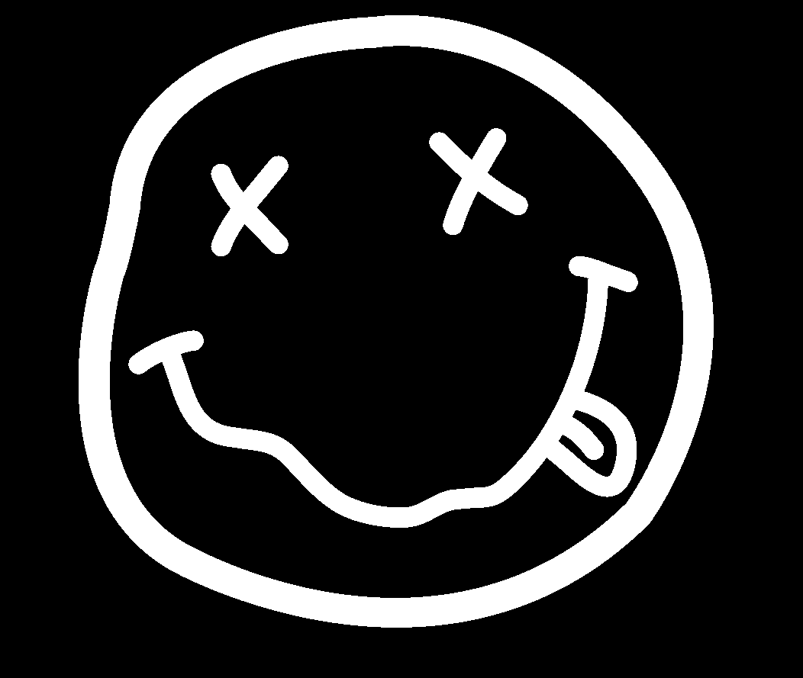
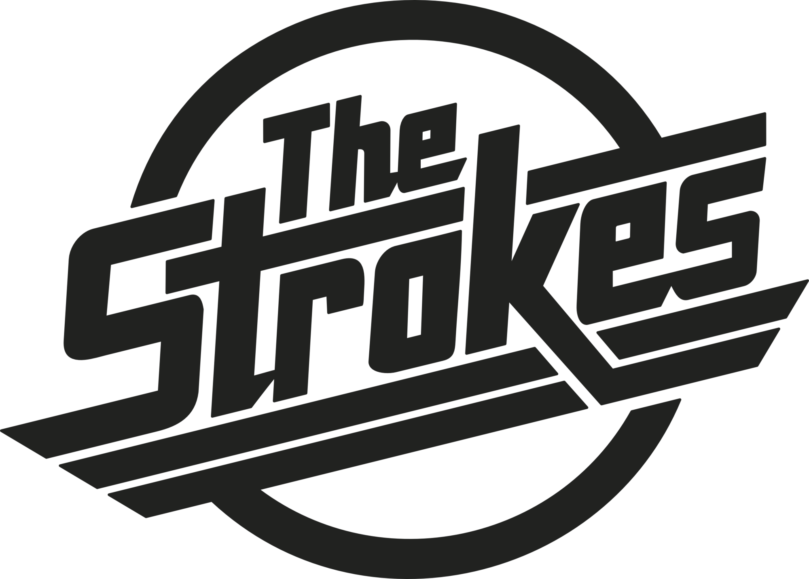
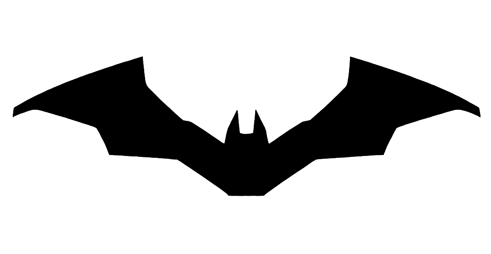
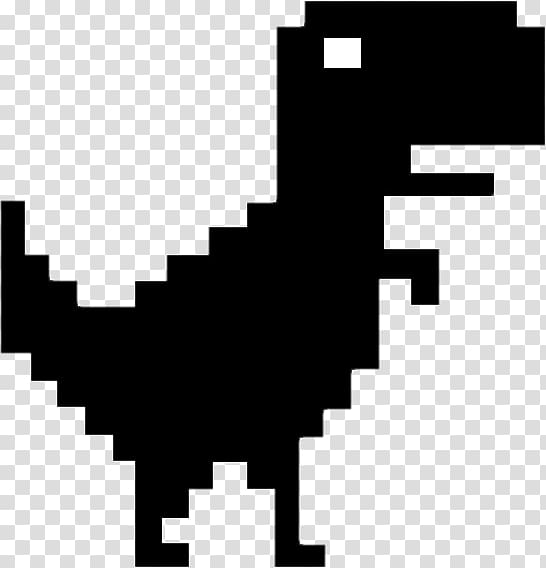
Ég fylgdi þessu kennslumyndbandi til að undirbúa myndirnar fyrir vínylskerann. Ég setti myndirnar í Inkscape og fór í stroke and fill stillingar. Þar slökkti ég á fill, setti “flat color” í stroke paint og í stroke style setti ég width á 0,02 mm. Síðan þurfti ég að exporta myndunum í PDF skjöl (eitt fyrir hvern lit) og hlaða þeim í vínylskerann. Ég fékk aðstoð frá leiðbeinanda við að nota vínylskerann en það gekk vel fyrir sig og límmiðarnir komu vel út. Ég þurfti að plokka af óþarfa efni og svo gat ég sett límmiðana á fartölvuna. Fyrir neðan má sjá mynd af límmiðunum en Fender límmiðinn var á tölvunni nú þegar.
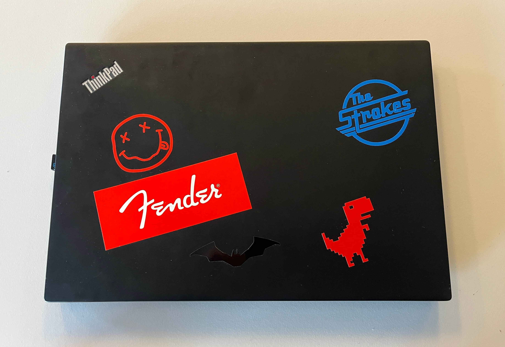
Undirbúningur fyrir geislaskurð
Í þessum hluta átti að hanna parametrískt, geirnelgt módel. Ég velti því fyrir mér hvað væri hægt að gera sem ég hefði not fyrir. Þá fékk ég þá hugmynd að gera nett og stílhreint geymslubox sem heldur skipulega utan um allt það helsta sem ég þarf á skrifborðinu mínu og liggur annars á víð og dreif. Lokahönnunin endaði á því að líta svona út:
Ég ákvað frá byrjun að ég vildi hafa opna hönnun ásamt nokkrum hólfum. Mér fannst mikilvægt að hafa smærri hólf til að geta geymt smáhluti eins og gítarneglur eða AirPods en líka hafa pláss fyrir aðeins stærri hluti eins og kortaveski eða penna. Þá fékk ég hugmyndina að hafa skilvegginn milli smærri hólfana fjarlægjanlegan. Það má gera með "slot" festingu þar sem auðvelt væri að taka hann burt til að stækka hólfið ef þörf er á. Einnig vildi ég að það væri auðvelt aðgengi að opna hólfinu að framan og að hliðarveggirnir væru rúnaðir meðfram því. Þá var ég kominn með þrjár tegundir af festingum í hönnunina mína, slot festingu fyrir litla kubbinn í smærra hólfinu, fingrafestingar út í jöðrum og pressfit festingar lengri skilveggs í botn- og hliðarplötu. Dæmi um þessar festingar má sjá á mynd hér að neðan.
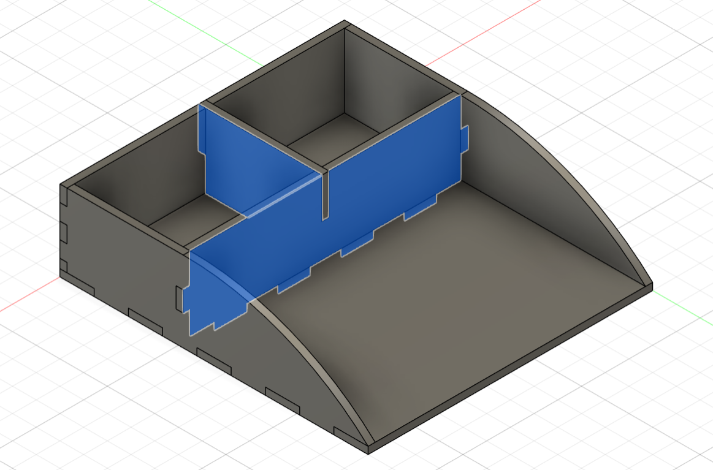
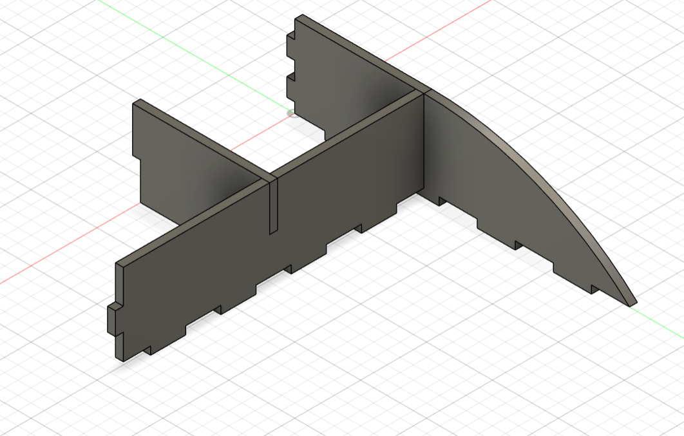
Kerf prófun
Þessi hluti verkefnisins var unnin í samstarfi við Breka Hólm og Svavar Dúa. Upphaflega ætluðum við að nota krossvið en síðan fengum við að vita að hann hefði klárast og því mældum við fyrir 6 mm akrýl í staðinn. Teiknaðir voru 12 jafn stórir rétthyrningar inn í ramma Í Fusion360. Síðan var skráin vistuð sem dxf skjal og löguð til í Inkscape til að hægt væri að nota hana í geislaskerann.
Eftir geislaskurðinn mældum við muninn á stóra rétthyrningnum og litlu kössunum sem voru skornir út (bilið á milli þeirra) og það reyndist vera 2,36 mm. Þeirri tölu var deilt með fjölda bila sem var 13 og við fengum þá að kerf væri 0.18 mm.
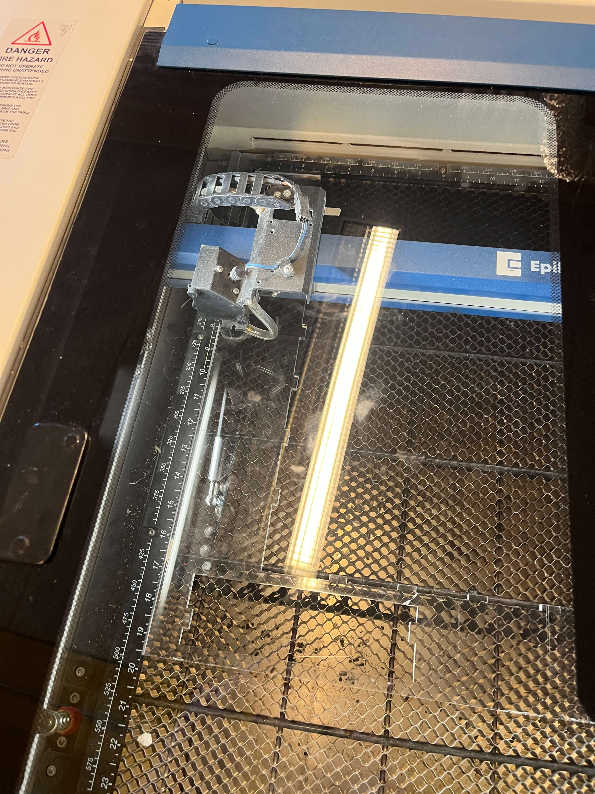
Geislaskurður fyrir kerf mælingu
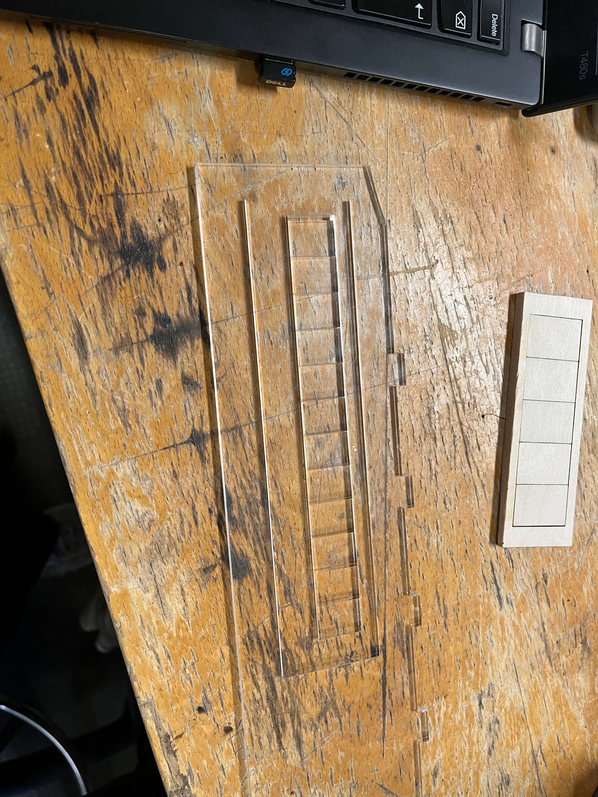
Skorinn biti fyrir mælingar
Hönnun í Fusion 360
Ég horfði á þetta myndband til að skilja betur hvernig ég gæti gert fingrafestingar sem breytast sjálfkrafa í Fusion 360. Það gekk vel að fylgja því og hönnunin hélst óbreytt þegar ég prófaði að breyta parametrum. Hönnunin endaði á því að vera 100% parametrísk en eftirfarandi parametrar voru notaðir við teikningu:
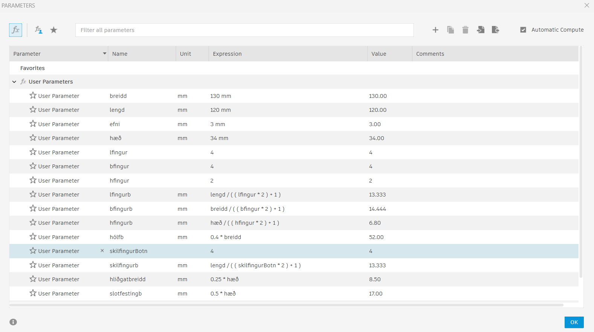
Ég endaði á því að velja endanlega breidd 130 mm, lengd 120 mm og hæðina 34 mm. Mér fannst það ná bestu jafnvægi milli útlits og notagildis. Einnig má sjá að smærra hólfið er 40% af heildarbreidd en þetta er að sjálfsögðu hægt að breyta eftir þörfum. Hliðarplöturnar eru stilltar þannig að boginn byrjar alltaf sjálfkrafa þar sem stærra hólfið byrjar (hjá lengri skilvegg). Það var gert með því að nota tangent arc og tengja endapunktinn við enda hólfsins.
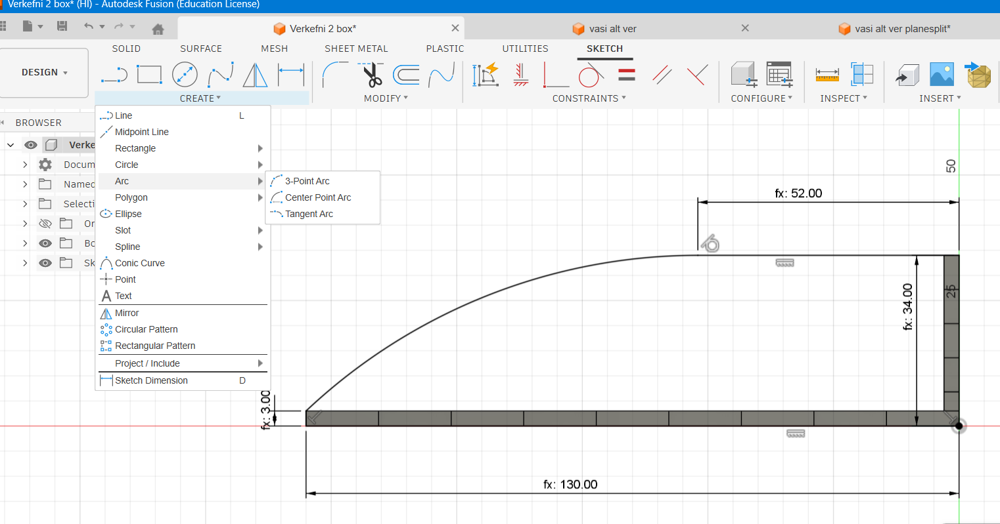
Næst þurfti ég að undirbúa hönnunina fyrir geislaskurðinn en ég fylgdi skrefunum í eftirfarandi myndbandi. Ég hafði heyrt frá samnemendum mínum sem voru búnir að skera út sína hönnun að þetta myndband væri talsvert hnitmiðaðra en hin sem mælt var með. Til að gera partana tilbúna þurfti ég að gera afrit af þeim með því að nota Move/copy skipun og svo nota align til að leggja allt niður á sama plan eins og sést hér fyrir neðan.
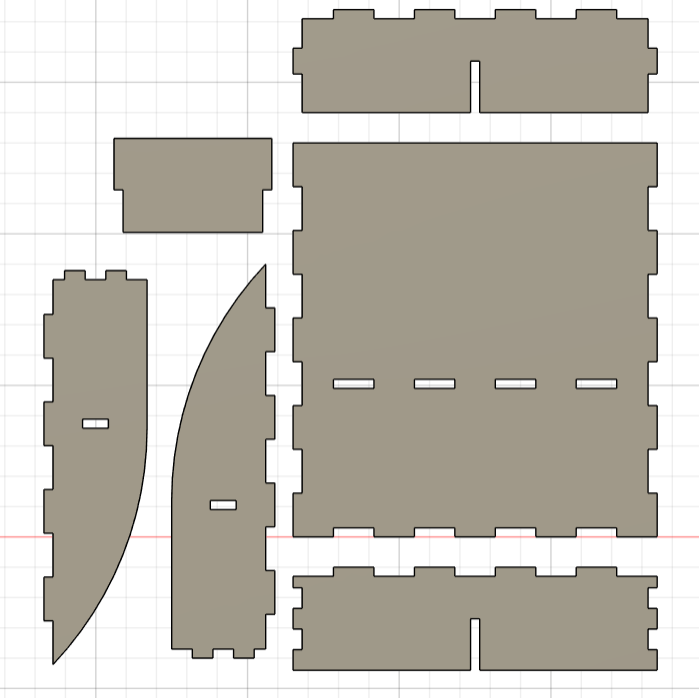
Svo fór ég úr Design flipanum yfir í Manufacture og bjó til nýtt setup. Síðan bætti ég við nýju 2D profile í Cutting undir Fabrication og valdi Laser cutter. Þar getur maður stillt kerf width. Þar á eftir fór ég í Geometry fyrir 2D profile og valdi alla partana. Þá opnaði ég Post Processor og fann AutoCad DXF í Fusion Library og svo er hægt að exporta skránna. Þegar maður er kominn með DXF skrá þarf að færa hana yfir í Inkscape og fara í stroke and fill stillingar. Þar þarf að slökkva á fill, hafa flat color í stroke og stilla line width á 0,02 mm.
Geislaskurður og samsetning
Ég byrjaði á að skera út prufu úr 3 mm akríl þar sem 6 mm plöturnar höfðu klárast skömmu áður. Leiðbeinandinn sagði þó að það ætti ekki að hafa mikil áhrif á mælt kerf og að efnið skipti meira máli. Ég notaði eftirfarandi stillingar til að skera út með geislaskeranum en leiðbeinandi ráðlagði okkur að lækka hraðann örlítið svo geislaskerinn myndi skera alveg í gegn.
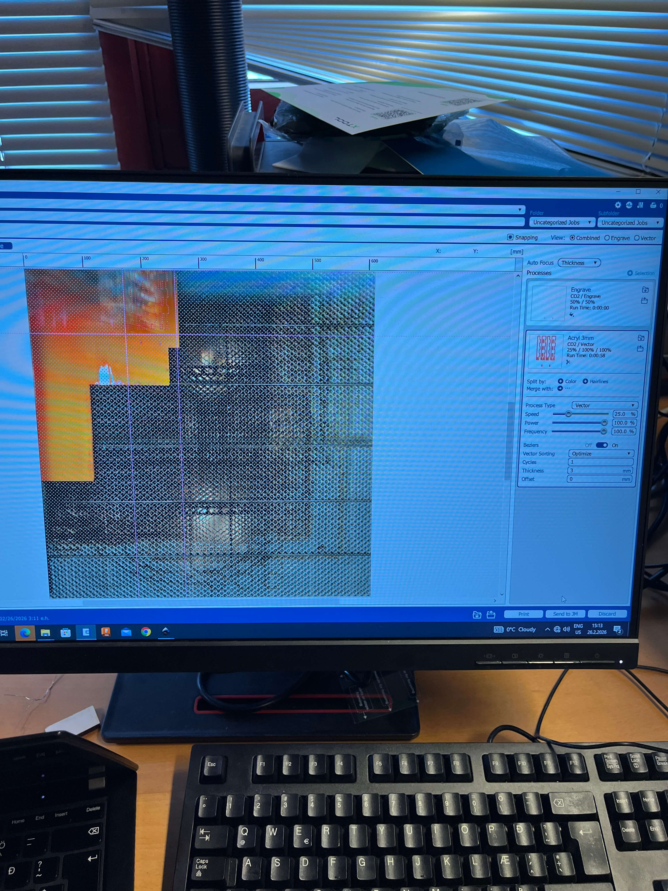
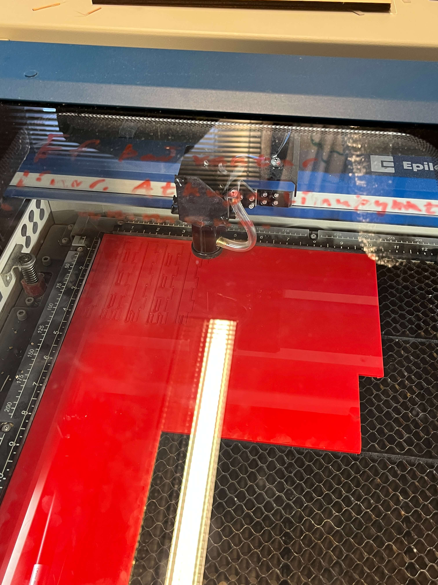
Prufan samanstóð af tveimur kubbum sem ég gat notað til að prófa allar þrjár tegundir festinga í hönnuninni minni. Hægt var að prófa pressfit, fingrafestingu (jaðarfesting) og slot-festingu fyrir raufina í miðjunni. Það voru tvær mismunandi raufar, önnur með breidd jafnt og efnisþykkt og hin efnisþykkt + 0.1 mm til að gá hvernig slot festingin myndi passa við aukinn slaka.
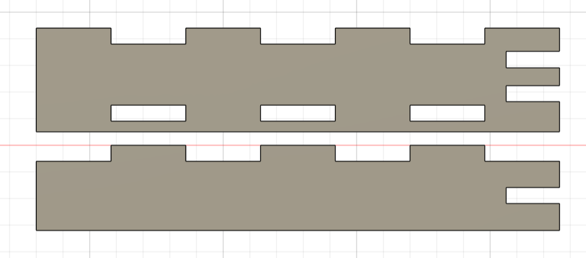
Ég skar prufuna út tvisvar sinnum fyrir kerf gildin 0.18 mm og 0.16 mm. Eins og sjá má á mynd fyrir neðan þá passaði 0.16 fremur illa og það var erfitt að smella pörtunum saman. Hins vegar passaði 0.18 kerf vel og var því valið fyrir lokahönnunina. Breiðari raufin var líka allt of laus og því hélt ég mig við upprunalega raufarbreidd sem var nokkuð föst en samt hægt að losa í sundur.
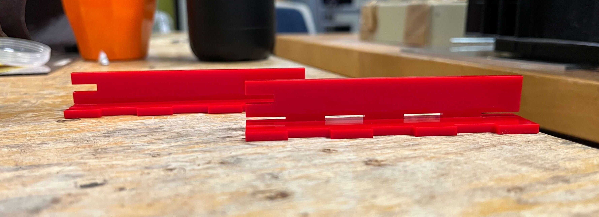
Ég skar út lokahönnunina með stillt á 0.18 mm kerf og notaði 3 mm akríl. Svo fór ég að púsla þessu saman og það passaði allt mjög vel saman nema raufin fyrir skilvegginn var frekar laus miðað við að ég ákvað að halda öllu óbreyttu. Það var reyndar ekkert verra fyrir mig þar sem ég vil geta tekið vegginn burt og stækkað hólfið að vild. Þetta hefur líklegast gerst því það er örlítill munur á efnisþykkt platnanna sem ég notaði í prófunum og í lokahönnuninni. Slot festingin passaði vel í prófununum en ég ætlaði samt að mæla efnisþykktina á plötunni sem ég notaði að lokum en það voru öll rennimál týnd í aðstöðunni. Þá hefði verið hægt að breyta parametranum fyrir efnisþykkt. Þetta hefur þó haft lítil áhrif á lokahönnunina og ég er mjög sáttur með hvernig þetta kom út. Sjá myndir af lokahönnun hér fyrir neðan.
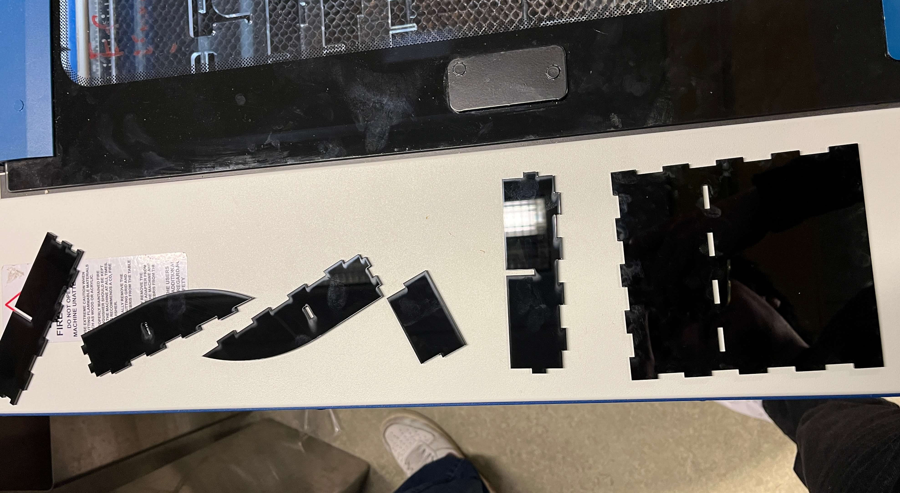
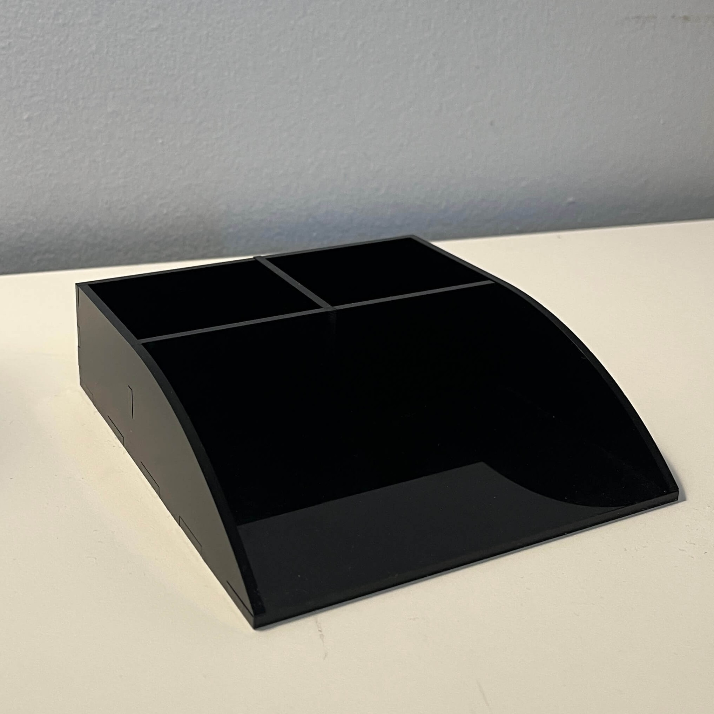
Box með skilvegg
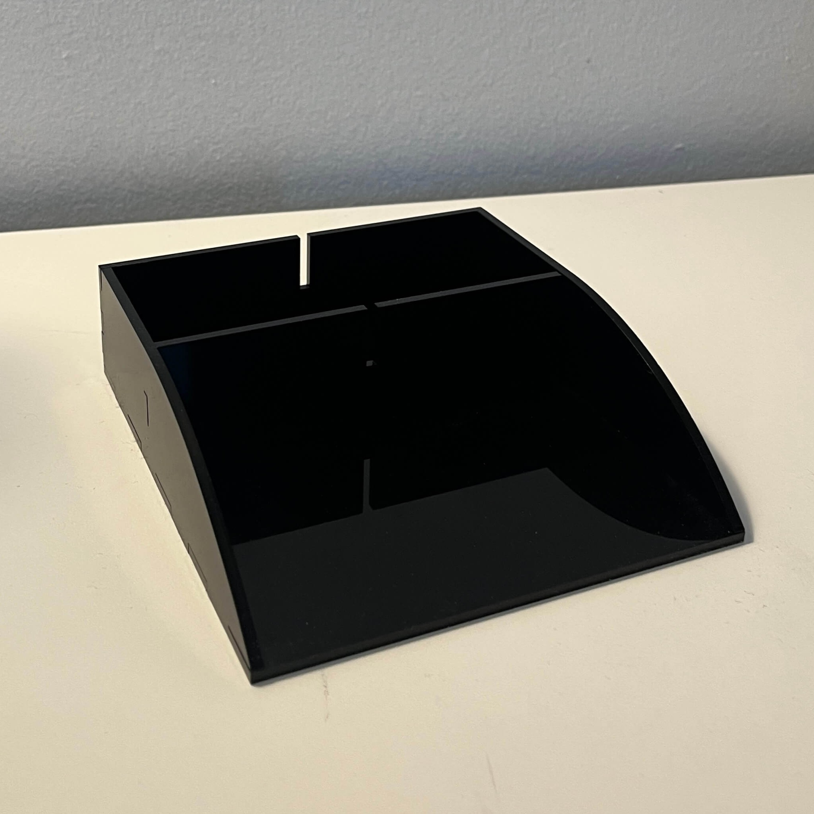
Box án skilveggs
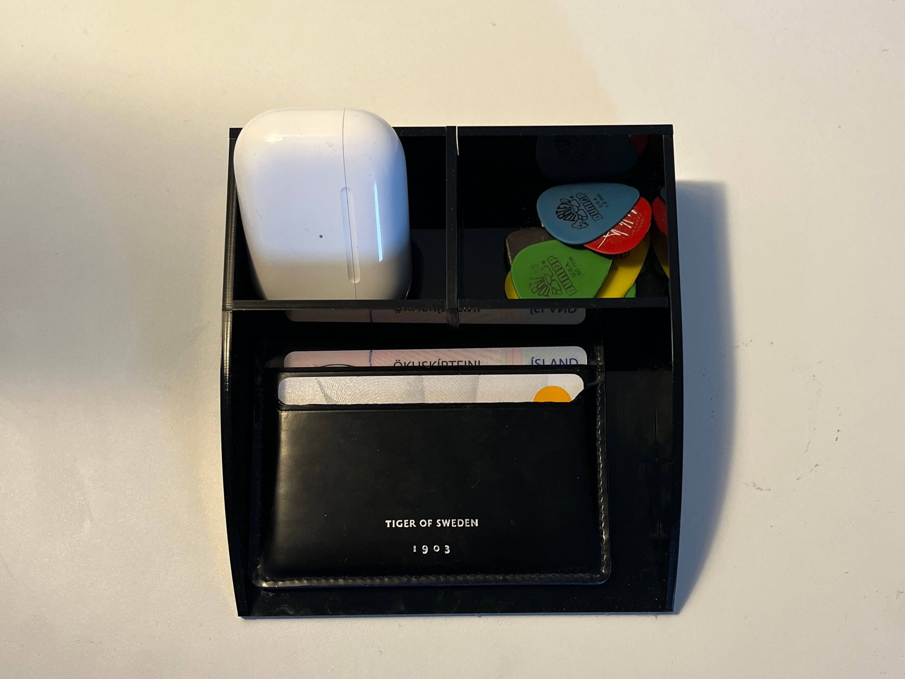
Að lokum exportaði ég hönnunina úr Fusion sem .stl skrá og setti hana hér inn á Thangs.